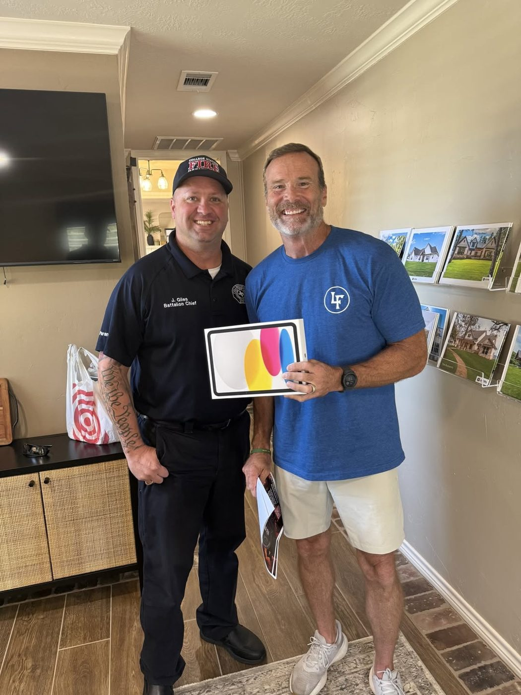

Grayson Brock

From our Facebook page, August 20, 2026:
On a recent visit to see City of College Station Firefighter Grayson Brock at MD Anderson in The Woodlands, it was observed that Grayson arrives around 6:30 a.m. to begin his chemotherapy treatment. We noticed that there was also no television in the patient treatment area. To make matters more difficult, the chemotherapy Grayson is undergoing has made him particularly sensitive to light. With limited lighting in the room, he was unable to read his Bible, books, or magazines. Grayson does not leave treatment until approximately 4:30 p.m. each afternoon—far too long to sit without meaningful engagement.
In response, the Brazos County First Responders Board voted to purchase an iPad for Grayson, allowing him to watch TV, read, or play games during his treatment. Pictured here is board member Jason Giles delivering this thoughtful gift to Steve, Grayson’s father and a recent retiree from CSPD, where he served as a lieutenant.
Ten days later, 371 runners turned out for the Brock 5K at Brayton Fire Training Field, organized by CSFD Battalion Chief Jason Giles. Together with a silent auction and a profit share at the Angry Elephant, the community raised nearly $23,000 for the Brock family.